Improving Harford County Web Experience
User Experience Research for improving the county website

Team Size: 4 | Role: User Research, Contextual Inquiries, Identity and Sequence Modelling, Visioning, Product Concept generation
_______________________________
The Client
Our client was Visit Harford! Inc, the Destination Marketing Organization for Harford County, Maryland. Harford is a county located just 25 miles northeast of Baltimore and along the shores of Chesapaeke Bay. The county's website(visitharford.com) and mobile apps aim at promoting the county's attractions to bring in tourism.
Research Goal
The client’s goal is to identify the shortcomings of Visit Harford website and app and hence improve the user experience to ultimately bring in more tourism to the county and increase revenue and support for local businesses. The aim of the research is as follows:
- to expand the reach of the website beyond 30-40 year-olds
- to lay more emphasis on engaging business and vacationing visitors
- to identify wants of visitors and translate it into features and offerings by the county
The Process
Data Collection
The main research method for our project was contextual inquiry. We wanted a broad sense of users' preferences and patterns while planning a trip within their natural context. Contextual inquiries are a rich source of such qualitative data.
For the scope of our project we decided to take a focused approach and narrow our target audience to people in their 20s. We interviewed 8 people from different backgrounds based on their occupation and relationship status to see how these variations factor into their planning habits and ultimately how the county website fits into their planning process.
Interview Focus
- User’s Intention of using the app/website
- Understand what information users are looking for
- The features of the app/website users interact with to find out about the county’s offerings
- The steps users take while navigating through the website and apps
- Other resources/apps/websites users use along with the county’s website to inform their decisions
- Preconceived notions the user might have about Harford County
Data Interpretation
After every two interviews we conducted interpretation sessions to come up with data models and interview/affinity notes reflective of the user interview. The models we chose were traditional contextual design models - Identity Model and Sequence Model. The identity model gives insights about broad user personalities that emerge from the users' planning process whereas the sequence model captures the steps users take while planning along with the issues they face during navigation. After We conducted four sessions in total where every team member played his or her role as either one of theses - Note Taker, Identity Modeler, Sequence Modeler and Interviewer. After generating eight models (four identity and four sequence), we consolidated these to get one identity and one sequence model for all the users/interviews combined. This gives a broad overview of the users behaviours and navigational patterns.

Apart from the data modelling, we did affinity mapping to see the themes that emerge in the users' behaviours regarding the website and planning process.
Ideation
Once we finished building the affinity maps and consolidating the models, we did a wall walk to generate design ideas from the refined user data. We came up with a list of issues and some hot ideas to tackle these issues by brainstorming in a round robin fashion within the team. The top voted ideas were then pursued further to create vision boards to generate solutions for the user issues and ultimately generate product concepts.
Figs(L to R): Design Ideas generated during the wall walks(orange notes), Hot Ideas that came out of the wall walk, and some evident Issues
Some of the top ideas that we came up with were the Personalized Trip Ideas and Trip Planner. We decided to pursue these further in our visioning sessions.
Figs(L to R): Personalized Trip Ideas: Identities that were kept in mind while visioning are thrift spender and nature lover, Trip Planner-1: Identities were social traveller and no-nosense planner, Trip Planner-2: Identities were detailed planner and experimenter
Product Concepts
Landing page with Personalized Trip Ideas and Trip Planner at front
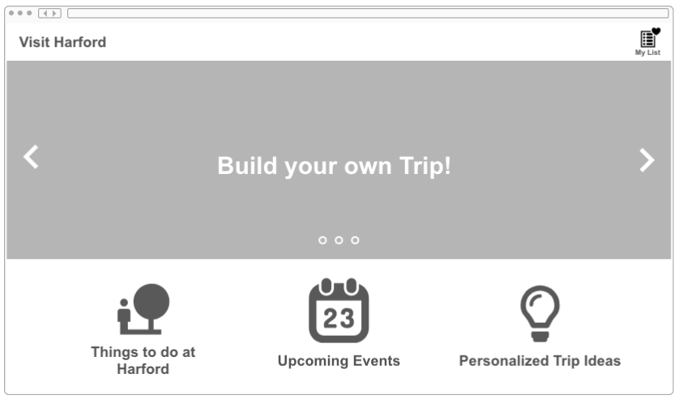Personality quiz trip to determine best suited trip ideas for the user
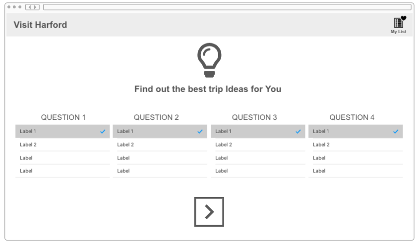 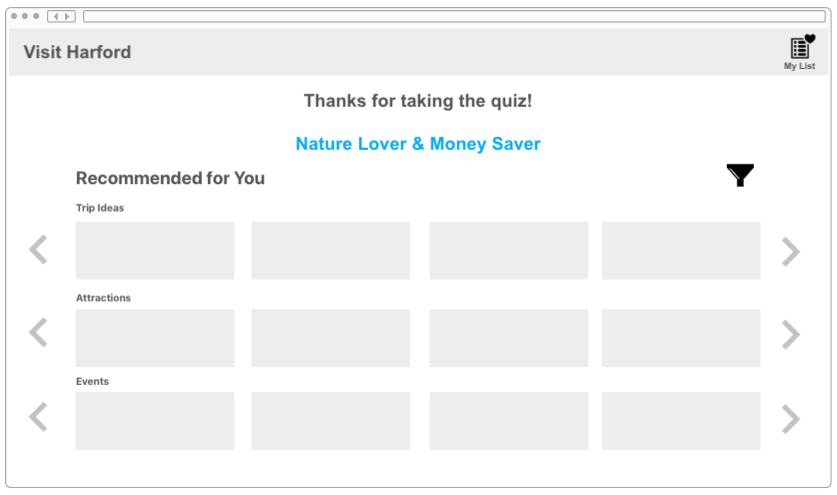Create personalized trip based on relevant parameters
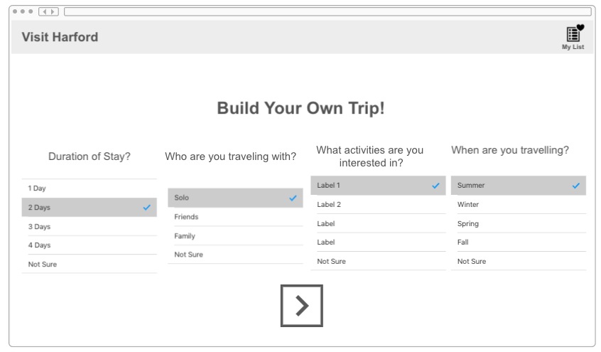 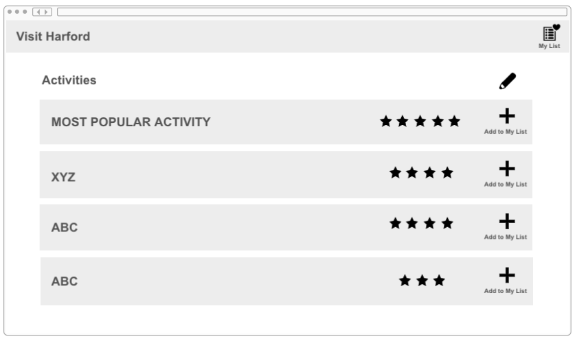Daywise Itinerary Planner
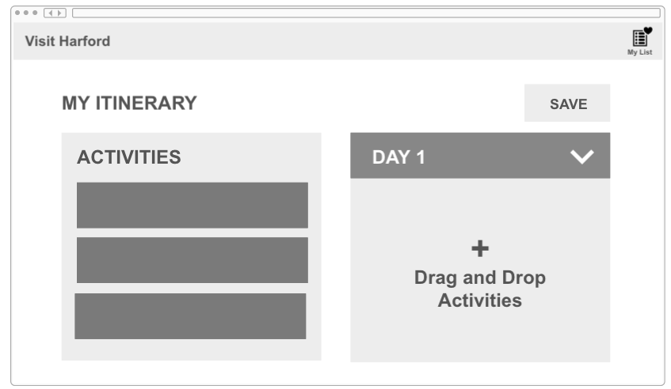Save activities for later in custom lists
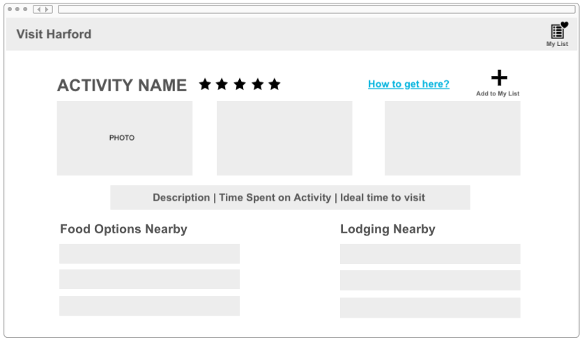 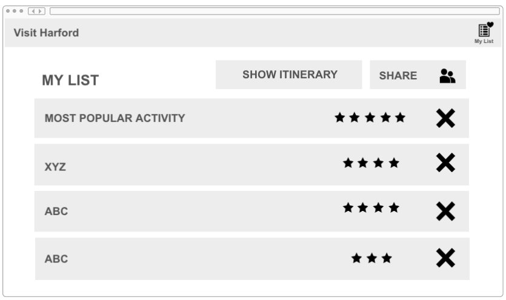Blog posts or articles about things to do in Harford County
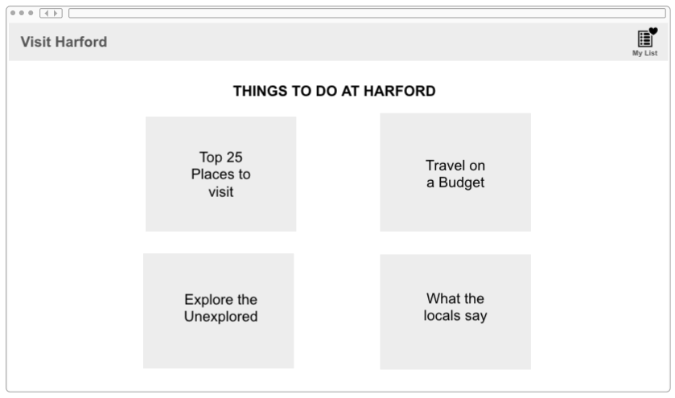Flexible events calender that gives daywise events happening in harford county
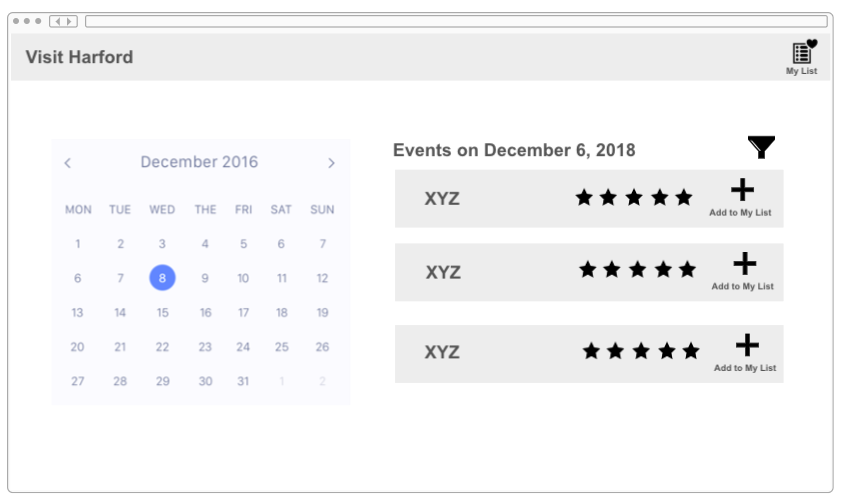 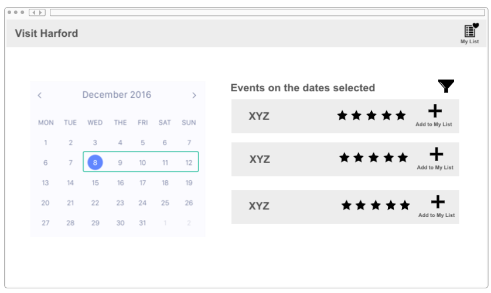_______________________________